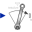

WorldTorqueExternal torque acting at frame_b, defined by 3 input signals and resolved in frame world, frame_b or frame_resolve |
Diagram
{kind=link}
Information
This information is part of the Modelica Standard Library maintained by the Modelica Association.
The 3 signals of the torque connector are interpreted as the x-, y- and z-coordinates of a torque acting at the frame connector to which frame_b of this component is attached. Via parameter resolveInFrame it is defined, in which frame these coordinates shall be resolved:
| Types.ResolveInFrameB. | Meaning |
|---|---|
| world | Resolve input torque in world frame (= default) |
| frame_b | Resolve input torque in frame_b |
| frame_resolve | Resolve input torque in frame_resolve (frame_resolve must be connected) |
If resolveInFrame = Types.ResolveInFrameB.frame_resolve, the torque coordinates are with respect to the frame, that is connected to frame_resolve.
If torque={100,0,0}, and for all parameters the default setting is used, then the interpretation is that a torque of 100 N is acting along the positive x-axis of frame_b.
Note, the cut-force in frame_b (frame_b.f) is always set to zero. Conceptually, a force and torque acts on the world frame in such a way that the force and torque balance between world.frame_b and frame_b is fulfilled. For efficiency reasons, this reaction torque is, however, not computed.
This torque component is by default visualized as a double arrow acting at the connector to which it is connected. The diameter and color of the arrow can be defined via variables diameter and color. The double arrow points in the direction defined by the torque vector. The length of the double arrow is proportional to the length of the torque vector using parameter Nm_to_m as scaling factor. For example, if Nm_to_m = 100 Nm/m, then a torque of 350 Nm is displayed as an arrow of length 3.5 m.
An example how to use this model is given in the following figure:
This leads to the following animation
Parameters (3)
| animation |
Value: true Type: Boolean Description: = true, if animation shall be enabled |
|---|---|
| resolveInFrame |
Value: Modelica.Mechanics.MultiBody.Types.ResolveInFrameB.world Type: ResolveInFrameB Description: Frame in which input torque is resolved (1: world, 2: frame_b, 3: frame_resolve) |
| Nm_to_m |
Value: world.defaultNm_to_m Type: Real (N·m/m) Description: Torque arrow scaling (length = torque/Nm_to_m) |
Inputs (3)
| diameter |
Default Value: world.defaultArrowDiameter Type: Diameter (m) Description: Diameter of torque arrow |
|---|---|
| color |
Default Value: Modelica.Mechanics.MultiBody.Types.Defaults.TorqueColor Type: Color Description: Color of arrow |
| specularCoefficient |
Default Value: world.defaultSpecularCoefficient Type: SpecularCoefficient Description: Reflection of ambient light (= 0: light is completely absorbed) |
Connectors (3)
| frame_b |
Type: Frame_b Description: Coordinate system fixed to the component with one cut-force and cut-torque |
|
|---|---|---|
| frame_resolve |
Type: Frame_resolve Description: The input signals are optionally resolved in this frame |
|
| torque |
Type: RealInput[3] Description: x-, y-, z-coordinates of torque resolved in frame defined by resolveInFrame |
Components (4)
| world |
Type: World |
|
|---|---|---|
| arrow |
Type: DoubleArrow |
|
|  | basicWorldTorque |
Type: BasicWorldTorque |
| zeroPosition |
Type: ZeroPosition |